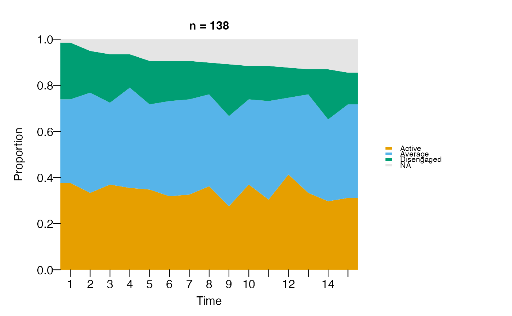

distribution_plot() draws how the states are distributed at each time
point: for every position column it counts the sequences in each state
and stacks the shares (or counts) as areas (default) or bars. It takes the
same inputs as sequence_plot() (wide sequences, networks built from
sequences, clusterings, mixture fits and tna models), draws one panel
per group or cluster, and is the figure sequence_plot(type = "distribution") draws.
The plot shows the composition of the sample at each time point, not how
individual sequences move: the same bands can come from sequences that
stay in one state or from sequences that change state at every step. Look
at single sequences with sequence_plot() and at the transitions with
build_tna(). Missing cells form their own band by default (na), so
sequences that end early stay visible instead of inflating the other
shares.
Usage
distribution_plot(
x,
group = NULL,
scale = c("proportion", "count"),
geom = c("area", "bar"),
na = TRUE,
trim = NULL,
trim_clusterwise = FALSE,
state_colors = NULL,
na_color = "grey90",
frame = FALSE,
width = NULL,
height = NULL,
main = NULL,
show_n = TRUE,
time_label = "Time",
xlab = NULL,
y_label = NULL,
ylab = NULL,
tick = NULL,
ncol = NULL,
nrow = NULL,
combined = TRUE,
legend = c("right", "bottom", "none"),
legend_size = NULL,
legend_title = NULL,
legend_ncol = NULL,
legend_border = NA,
legend_bty = "n",
cols = NULL
)Arguments
- x
The sequences: a wide data frame or matrix (one row per sequence, one column per time point), a
netobjectbuilt from sequences, anetobject_group, anet_clustering, anet_mmmor atnamodel. A clustering, a mixture fit or anetobject_groupgives one panel per cluster or group. A one-hot or association network, and a frame or matrix holding only 0 and 1 (unlesscolsdeclares a frame's columns as positions), raise an error of classnestimate_bad_input.- group
A vector of one group label per sequence (length
nrow(x)), drawing one panel per group in the order of its factor levels (sorted for a character or numeric vector).NULL(default) uses the cluster assignments carried by anet_clustering,net_mmmornetobject_group; agroupgiven overrides them. Grouped panels are titled"Cluster <label>", whatever the grouping.- scale
What the y-axis shows:
"proportion"(default) divides each time point by its total, so the bands fill 0 to 1;"count"keeps the counts, and the axis reaches the tallest stack.- geom
How the bands are drawn:
"area"(default) as stacked polygons,"bar"as stacked bars.- na
Whether missing cells are drawn as an extra band coloured
na_color. DefaultTRUE. WithFALSEthey are left out, and the proportions are shares of the observed states at each time point.- trim
Cuts the time axis (one number) or the time axis and the rows (two numbers);
NAon either leaves that axis alone. DefaultNULL(no cut). The first number: a fraction in (0, 1) keeps the busiest time points that together hold that share of the observed states, wherever they sit, and the kept ones close up under their own labels (trim = 0.95); a value of 1 or more keeps the first that many time points (trim = 50). The second number ends each sequence earlier before the proportions are taken: a count keeps its first that many observed states, a fraction its first share of them (trim = c(0.9, 0.9)); no sequence is removed.- trim_clusterwise
For grouped plots with a fractional
trim:FALSE(default) chooses one set of time points over all sequences, so every panel has the same time axis;TRUEchooses them within each group, so panels can differ in width.- state_colors
Colours for the state bands: an unnamed vector, one colour per state in sorted state order, or a named vector such as
c(plan = "#0072B2"), where only the named states change and the rest keep the Okabe-Ito defaults. Names this plot does not draw are dropped with a message, so one palette can serve several figures.NULL(default) uses the palette stored onxwithset_state_colors(), or the Okabe-Ito palette.- na_color
The colour of the missing-cell band. Default
"grey90".- frame
Whether to draw a box around each panel, and axis lines. Default
FALSE.- width, height
Size of a new graphics device, in inches, opened only in an interactive session (the other dimension defaults to 7). Default
NULL(draw on the current device).- main
The plot title. With several panels on one figure it is drawn above them; with several panels and
combined = FALSEit is not drawn. DefaultNULL.- show_n
Whether to add the number of sequences,
"(n = N)", to the title of each panel. DefaultTRUE.- time_label
The x-axis label. Default
"Time";NULLor""draws none.- xlab
Another name for
time_label; when given, it wins.- y_label
The y-axis label. Default
NULL:"Proportion"or"Count", followingscale.- ylab
Another name for
y_label; when given, it wins.- tick
Label every
tick-th time point. DefaultNULL, which thins the labels to at most about 15.- ncol, nrow
The panel grid. Default
NULL: with neither given,ncol = ceiling(sqrt(G))andnrow = ceiling(G / ncol)forGpanels; with one given, the other follows. Withcombined = FALSEthe grid does not affect the layout, butncol * nrowmust still be at least the number of panels or an error is raised.- combined
Whether to draw all panels on one figure.
TRUE(default) arranges them withgraphics::layout();FALSEdraws each panel on its own page with its own legend, for knitr (fig.show = "asis") or for saving each panel to its own file. A single panel ignores it.- legend
Where the legend goes:
"right"(default),"bottom"or"none".- legend_size
The legend text size. Default
NULL, which scales it with the device width, between 0.65 and 1.2.- legend_title
A title for the legend. Default
NULL(none).- legend_ncol
The number of legend columns. Default
NULL: one column on the right, one row at the bottom.- legend_border
The colour of the swatch borders. Default
NA(none).- legend_bty
The legend box:
"n"(default) draws none,"o"draws one.- cols
For a wide data frame: the columns holding the time points. Needed when they are not a numbered run (
T1,T2, ...), when one of them is calledaction, or when any other column sits beside them. Given for any other input, it raises an error of classnestimate_bad_input. DefaultNULL.
Value
Invisibly, a list describing the drawn figure:
- counts
A named list, one entry per panel, each a state by time point matrix of counts; rows are named by
levels, columns are the time points kept.- proportions
The same matrices with each column divided by its total (an empty time point stays 0).
- levels
The state labels in plotting order, with
"NA"appended whenna = TRUE.- palette
The fill colours, one per entry of
levels.- groups
The panel labels (
"all"when ungrouped), in the order ofcountsandproportions.
Examples
distribution_plot(as.data.frame(trajectories))
